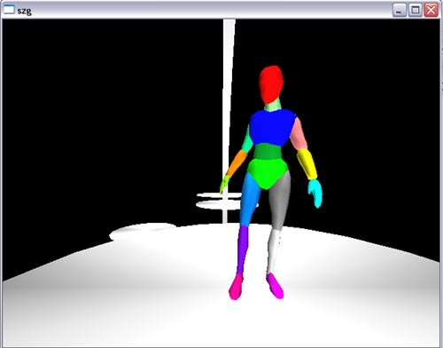
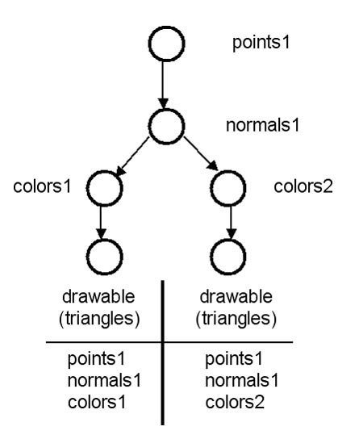
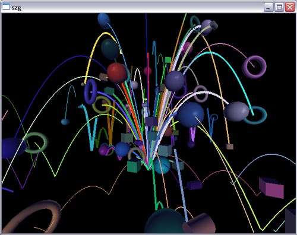

Myriad Scene Graph

This section gives a general introduction to the Myriad scene graph and explains its C++ API. For a description of the (similar) Python API, please see this tutorial. There are several scene graph examples in Python:
When reading this section, you'll first want to understand the basic design of the Myriad distributed scene graph, including how various kinds of state (lighting, texturing, coordinate arrays) are inherited to guide rendering where it actually takes place: at the "drawable" nodes. It is also important to understand how to construct a node tree and populate it using built-in objects, which is the best way to get something working quickly.
Overview
The arGraphicsDatabase object receives a stream of data records causing it to alter its internal contents. These data records are either in the form of arStructuredData or byte blocks which can be parsed into arStructuredData records. The alter() method receives arStructuredData, while the alterRaw() method receives byte blocks, parses them, and then runs the result through alter().
The arGraphicsDatabase object manages a tree of arGraphicsNode objects. The base class arGraphicsNode is subclassed to define the various types of nodes, like visibility nodes, texture nodes, lines nodes, etc. These objects have three important methods, receiveData(), draw(), and dumpData(). Message streams sent to the arGraphicsDatabase via alter()/alterRaw() are either routed to the arGraphicsDatabase itself, like the message that requests a new node be created, or to a specific node. For instance, a message might ask that a visibility node turn itself on or off. This is the use of the receiveData() method. The draw() method renders graphics via OpenGL. The dumpData() method creates a record that reflects the node's state. This record can then be used to replicate that state in another linked database.
Graphics state is synchronized across multiple machines by replicating
arGraphicsDatabase objects on each machine. An arGraphicsServer object
exists on the master machine and an arGraphicsClient object exists on each
render box (slave); all of these manage an arGraphicsDatabase. When an
arGraphicsClient connects to the arGraphicsServer, the server serializes the
state of its arGraphicsDatabase (using the dumpData() methods of its nodes)
and sends it across the network to the newly-connected arGraphicsClient,
which then uses the alterRaw() method of its arGraphicsDatabase to recreate
the remote state. Subsequently, all alter() calls to the arGraphicsDatabase
managed by the arGraphicsServer are mirrored over the network to those
managed by the connected arGraphicsClients.
Node Inheritance and Drawing

Tree traversal, arGraphicsContext.
Node Types
Constructing a Node Tree
arGraphicsDatabase is a subclass of arDatabase, as arGraphicsNode is a subclass of arGraphicsNode. A short summary of the kinds of operations that are possible.
Node names. The root node has a special name ("root") and ID (0).
string arDatabaseNode::getName() const; void arDatabaseNode::setName(const string& name);
Node IDs. Cannot set node ID This is done by an arDatabase only in node construction. An arDatabase never repeats node IDs for the nodes it creates.
int arDatabaseNode::getID();
Node info.
string arDatabaseNode::getInfo() const; void arDatabaseNode::setInfo(const string& info);
Node type.
string arDatabaseNode::getTypeString() const;
Creating new nodes. This must be done via the arDatabase.
arDatabaseNode* arDatabase::getRoot();
arDatabaseNode* arDatabase::newNode(arDatabaseNode* parent,
const string& type,
const string& name = "",
bool refNode = false);
arDatabaseNode* arDatabaseNode::newNode(const string& type,
const string& name = "",
bool refNode = false);
Reference counting. Necessary for thread-safety (if another thread is deleting).
void arDatabaseNode::ref(); void arDatabaseNode::unref(); int arDatabaseNode::getRef(); bool arDatabaseNode::active(); list<arDatabaseNode*> arDatabaseNode::getChildrenRef();
Deleting nodes, cutting and erasing.
bool arDatabase::cutNode(arDatabaseNode* node); bool arDatabase::cutNode(int ID); bool arDatabase::eraseNode(arDatabaseNode* node); bool arDatabase::eraseNode(int ID);
Inserting between existing parent and child (or in front of ALL of a parent's children). Must go through arDatabase to avoid deadlocks.
arDatabaseNode* arDatabase::insertNode(arDatabaseNode* parent,
arDatabaseNode* child,
const string& type,
const string& name = "",
bool refNode = false);
Permuting children.
void arDatabase::permuteChildren(arDatabaseNode* parent,
list& children);
void arDatabaseNode::permuteChildren(list& children);
Inspecting and traversing the node tree.
arDatabaseNode* arDatabaseNode::getParent() const; list<arDatabaseNode*> arDatabaseNode::getChildren() const; void arDatabaseNode::ps(int maxLevel=10000);
Finding nodes via name or ID.
arDatabaseNode* arDatabaseNode::findNode(const string& name,
bool refNode = false);
arDatabaseNode* arDatabaseNode::findNodeByType(const string& type.
bool refNode = false);
arDatabaseNode* arDatabase::getNode(int ID);
Manipulating node level. Imporant only for peer-to-peer reality.
arNodeLevel getNodeLevel(); void setNodeLevel(arNodeLevel nodeLevel);
Helper Classes
arMaterial, with the fields having the same meaning and defaults as in the OpenGL specification.
arVector3 diffuse; arVector3 ambient; arVector3 specular; arVector3 emissive; float exponent; float alpha;
arLight, with the fields having the same meaning and defaults as in the OpenGL specification.
int lightID; arVector4 position; arVector3 diffuse; arVector3 ambient; arVector3 specular; float constantAttenuation; float linearAttenuation; float quadraticAttenuation; arVector3 spotDirection; float spotCutoff; float spotExponent;
arBoundingSphere
arVector3 position; float radius; bool visibility;
arRay
arVector3 origin; arVector3 direction;
Using Built-In Objects

If you are writing your own custom code instead of using the arDistSceneGraphFramework or arMasterSlaveFramework objects (all the demos included with this distribution use these frameworks), first call dgSetGraphicsDatabase() before issuing any other API calls. The framework objects hide this detail.
arGraphicsDatabase graphicsDatabase; dgSetGraphicsDatabase(&graphicsDatabase);
arSphereMesh: Sphere of radius 1 centered at (0,0,0).
void arSphereMesh::setSectionSkip(int skip);
arCubeMesh: Cube with side length 1 centered at (0,0,0) and axis-aligned.
arCylinderMesh: Cylinder of length 1 pointing along the z axis.
void arCylinderMesh::setAttributes(int numberDivisions,
float bottomRadius,
float topRadius);
void arCylinderMesh::toggleEnds(bool useEnds);
arRectangleMesh: Square with sides of length 1 centered at (0,0,0). Normal in the positive y direction.
arTorusMesh: Torus in the x-y plane.
void arTorusMesh::reset(int numberBigAroundQuads,
int numberSmallAroundQuads,
float bigRadius,
float smallRadius)
Importing files in .obj format.
Node Methods in C++
void arDatabaseNode::lock(); void arDatabaseNode::unlock(); arMatrix4 arTransformNode::getTransform(); void arTransformNode::setTransform(const arMatrix4& transform); string arTextureNode::getFileName(); void arTextureNode::setFileName(const string& fileName, int alpha = -1); string arBillboardNode::getText(); void arBillboardNode::setText(const string& text); bool arVisibilityNode::getVisibility(); void arVisibilityNode::setVisibility(bool visibility); float arBlendNode::getBlend(); void arBlendNode::setBlend(float blendFactor); arLight arLightNode::getLight(); void arLightNode::setLight(arLight& light); arMaterial arMaterialNode::getMaterial(); void arMaterialNode::setMaterial(const arMaterial& material); const float* arNormal3Node::getNormal3(int& number); void arNormal3Node::setNormal3(int number, float* normal3, int* IDs = NULL); vectorarNormal3Node::getNormal3(); void arNormal3Node::setNormal3(vector & normal3); void arNormal3Node::setNormal3(vector & normal3, vector & IDs); const float* arColor4Node::getColor4(int& number); void arColor4Node::setColor4(int number, float* color4, int* IDs = NULL); vector arColor4Node::getColor4(); void arColor4Node::setColor4(vector & color4); void arColor4Node::setColor4(vector & color4, vector & IDs); const float* arTex2Node::getTex2(int& number); void arTex2Node::setTex2(int number, float* tex2, int* IDs = NULL); vector arTex2Node::getTex2(); void artex2Node::setTex2(vector & tex2); void arTex2Node::setTex2(vector & tex2, vector & IDs); const int* arIndexNode::getIndices(int& number); void arIndexNode::setIndices(int number, int* indices, int* IDs = NULL); vector arIndexNode::getIndices(); void arIndexNode::setIndices(vector & indices); void arIndexNode::setIndices(vector & indices, vector & IDs);
Drawable Node Specifics
Relationship between drawable number, the sizes of the various arrays, and the number of primitives drawn.
int arDrawableNode::getType(); string arDrawableNode::getTypeAsString(); int arDrawableNode::getNumber(); void arDrawableNode::setDrawable(arDrawableType type, int number); void arDrawableNode::setDrawableViaString(const string& type, int number);
Graphics State Node
string arGraphicsStateNode::getStateName();
bool arGraphicsStateNode::isFloatState();
bool arGraphicsStateNode::isFloatState(const string& stateName);
string arGraphicsStateNode::getStateValueString(int i);
float arGraphicsStateNode::getStateValueFloat();
bool arGraphicsStateNode::setGraphicsStateString(const string& stateName,
const string& value1,
const string& value2 = "false");
bool arGraphicsStateNode::setGraphicsStateFloat(const string& stateName,
float stateValueFloat);
Notes on Thread Safety
The Myriad scene graph is thread-safe, for instance, with respect to drawing in multiple threads even with simultaneous deletions and other scene graph restructurings occur in still other threads.